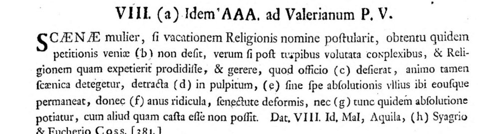

“Donec anus ridicula, senectute deformis” (381)
Latin: Leipzig 1741, vol. V, p. 420, scan. Addressed by “the same Augusti” as the law before (in 381, Gratian, Valentinian II and Theodosius I) to Valerianus, prefect of the City. Editors’ note letters omitted. Highlighted: the words Lecky quotes.

8. The same Augusti to Valerianus, prefect of the City.
If a woman of the stage asks for release in the name of religion, the indulgence is not to be refused her on the strength of her petition. But if afterwards, having wallowed in base embraces, she is found to have betrayed the religion she sought, and to be, in her heart, still an actress, doing what she had ceased to do by profession, she is to be dragged back to the stage and stay there without hope of any release until she is a ridiculous old woman, deformed by age; and not even then shall she obtain release, when she can be nothing but chaste. Given on the eighth day before the Ides of May [8 May], at Aquileia, in the consulship of Syagrius and Eucherius [381].
Original Latin
VIII. Idem AAA. ad Valerianum P. V.
Scaenae mulier, si vacationem religionis nomine postularit, obtentu quidem petitionis veniae non desit, verum si post turpibus volutata complexibus, et religionem quam expetierit prodidisse, et gerere, quod officio desierat, animo tamen scaenica detegetur, detracta in pulpitum, sine spe absolutionis ullius ibi eousque permaneat, donec anus ridicula, senectute deformis, nec tunc quidem absolutione potiatur, cum aliud quam casta esse non possit. Dat. VIII Id. Mai., Aquila, Syagrio et Eucherio coss. [381.]
The place of issue is printed “Aquila”; Gothofredus’s note (h) asks “Aquileia?”, and the rendering above follows him. In his commentary he explains that the law adds a condition to the earlier privilege: release lasted only “if the woman persevered in that religion”. Lecky’s “If the emancipated actress turned out badly, she was to be dragged back to the stage and kept there till she was ‘a ridiculous old woman’” is a fair summary; he leaves out the final clause.
Further down the rabbit hole
Sources that Lecky cites in the notes next to the ones that cite this page.
- Lebrun, Discours sur la comédieWhy actors were buried at night, without priest or prayer
- Codex Theodosianus XVI.8.1 and XVI.10.3Constantine on Jews and converts, and the temples spared for the sake of the games
- Gibbon, Decline and Fall of the Roman EmpireAn Augustine quotation and a stronger claim about Aliturus
- Storch, Cours d’économie politiqueA tutor to the Russian grand dukes on usury laws that backfire
- Augustine, Enarratio in Psalmum XXXVI, sermo 3, § 6More than given, even in wheat or wine, is usury
- Bayle, Dictionnaire historique et critiqueWhat Bayle really said about Augustine and Socinus


Backlinks
Every place in Rationalism in Europe that links to this page (generated automatically when the site is built).
- Chapter VI: note 107